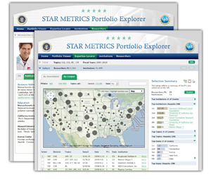

|
Recent NewsSTAR METRICS National Jobs Report: The
STAR METRICS program is the first large-scale effort to document the
results of federal S&T investments by directly linking inputs and
outputs, using administrative records of research institutions. A first
look at a national review of the jobs produced by Star Metrics from
federal research investments from NSF, NIH, DOE and EPA will be released
in September 2011. |
|
Portfolio ExplorerView NSF research portfolios by topic. |
Expertise Locator View NSF researchers and their collaborators. |
InstitutionsView NSF funded institutions. |